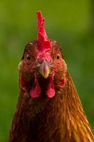
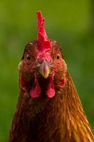

Главная |
Курица |
Ку́рица, или дома́шняя ку́рица (вид лат. Gallus gallus, подвид Gallus gallus domesticus[2][Комм. 1], иногда — Gallus domesticus; самец — пету́х, птенцы — цыпля́та) — самая многочисленная и распространённая домашняя птица, а в XXI веке — самый многочисленный на Земле вид птиц. Их разводят ради получения мяса и яиц; кроме того, от них получают перья и пух.
 
